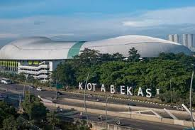

Kota Bekasi

Tentang Kota Bekasi
Kota bekasi merupakan salah satu kota yang termasuk di provinsi Jawa Barat. Kota ini sering dijuluki planet lain dari netizen karena warganya sangat bermacam-macam dan daerah yang sangat panas. Berikut link website kota bekasi Klik disini.
Berdasarkan Undang-Undang Nomor 14 Tahun 1950 terbentuklah Kabupaten Bekasi, dengan wilayah terdiri dari 4 kewedanaan, 13 kecamatan, dan wilayah pelimpahan dari Kawedanan Jonggol (Tjibaroesa), Buitenzorg yaitu: Kecamatan Cibarusah, Kecamatan Serang Baru, Desa Kranggan (Sekarang Kecamatan Jatisampurna), serta sebagian Kecamatan Setu. Angka-angka tersebut secara simbolis diungkapkan dalam lambang Kabupaten Bekasi dengan motto "SWATANTRA WIBAWA MUKTI".
Berikut Kewedanan yang ada di Bekasi:
- Kewedanan Bekasi
- Kewedanan Tambun
- Kewedanan Cikarang
- Kewedanan Serengseng
Berikut macam-macam mal yang ada di Bekasi:
- Summarecon Mall Bekasi
- Metropolitan Mall Bekasi
- Mall Grand Metropolitan Bekasi
- Grand Mall Bekasi
- Mega Bekasi Hypermall
- Bekasi Junction
- Bekasi Cyber Park BCP
- Revo Mall
- Pakuwon Mall Bekasi
Berikut detail daerah dari setiap kewedanan Bekasi :
| NO. |
Nama kewedanan |
Jumlah |
| Kecamatan |
Desa |
| 1 |
Kewedanan Bekasi |
5 |
28 |
| 2 |
Kewedanan Tambun |
3 |
24 |
| 3 |
Kewedanan Cikarang |
3 |
22 |
| 4 |
Kewedanan Serengseng |
3 |
20 |
Sejarah Kota Bekasi
Penelusuran Poerbatjaraka (seorang ahli bahasa Sanskerta dan bahasa Jawa Kuno),
kata “Bekasi” secara filologis berasal dari kata Candrabhaga;
Candra berarti bulan (“sasi” dalam bahasa Jawa Kuno) dan Bhaga berarti bagian.
Jadi Candrabhaga berarti bagian dari bulan.
Pelafalan kata Candrabhaga kadang berubah menjadi Sasibhaga atau Bhagasasi.
Dalam pengucapannya sering disingkat Bhagasi, dan karena pengaruh bahasa Belanda sering ditulis Bacassie (di Stasiun Lemahabang pernah ditemukan plang nama Bacassie).
Kata Bacassie kemudian berubah menjadi Bekasi sampai dengan sekarang.
Candrabhaga merupakan bagian dari Kerajaan Tarumanagara,
yang berdiri sejak abad ke 5 Masehi.
Ada 7 (tujuh) prasasti yang menyebutkan adanya kerajaan Tarumanagara yang dipimpin oleh Maharaja Purnawarman,
yakni Prasasti Tugu (Cilincing, Jakarta), Prasasti Ciaruteun, Prasasti Muara Cianten, Prasasti Kebon Kopi,
Prasasti Jambu, Prasasti Pasir Awi (ke enam prasasti ini ada di daerah Bogor), dan satu prasasti di daerah Bandung Selatan (Prasasti Cidangiang).
Kualitas udara di Kota Bekasi
Pada tanggal 9 Oktober 2024, polutan O3 yang ada di bekasi mencapai 5µg/m³ dan SO2 mencapai 25.9µg/m³.
Quotes dari Pahlawan Bekasi
1. K.H Noer Ali

K.h noer Ali mengatakan,
"Betapa pun besar kemampuan seseorang untuk mendidik dan mengelola sebuah organisasi, bila landasan keikhlasannya kering, ruhul jihadnya tipis, apalagi terbetik di dalam hati nita untuk mencari kepentingan pribadi, saya yakin itu tidak akan menghasilkan apa-apa.”